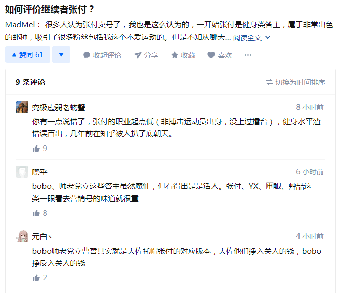
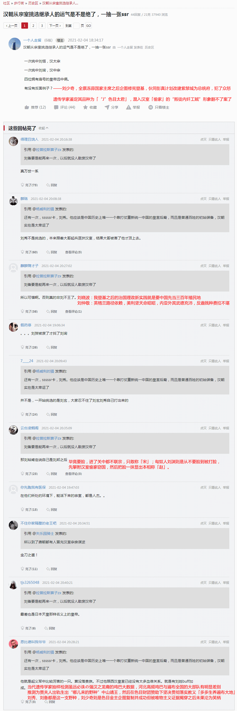
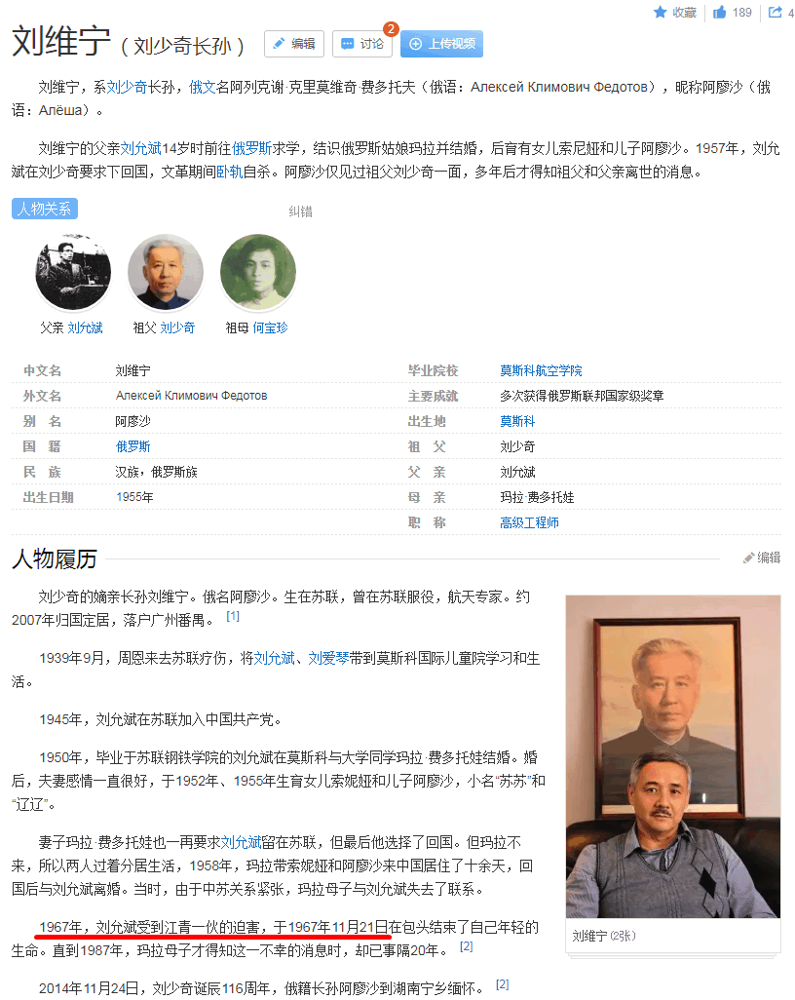
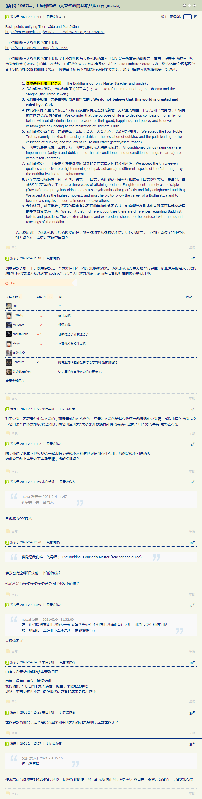

长话短说，备份屎史料：




简单说，刚爬起来酒劲还在头昏脑胀上网乱转的时候，看见国际一流和谐宜居之都「高学历精英社交圈」正在首页今日头条位置醒目应景推荐的色目含量甚高的重要情报，忍不住嘟囔了一句粗话，这帮港股上市大手会社雇佣的娱乐至死の色目逗哔炒作「三国题材网络电子游戏」上瘾了吧？
就连人民群众都能看出来哪些网红画风大变属于「卖号」行为了，或者说按照百善の新时代中国特色社会主义先行示范区依法治国的惯例，一旦流量涨上来，腾讯就主动回收那些「租」出去的帐号了，然后开始推销私货，包括但不限于港市垃圾股和虚拟货币，与美市散户「带头大哥」针锋相对。
继续上网乱转，发现情况似乎不那么简单，虽然没看见「拉丁字母拼写的倒装姓名」之虽远必诛の强汉之龙裔指点江山激昂文字，但是相关曰若稽古如是我闻指桑骂槐倒是不少，于是备份情报，解读标注在图上。
现在知道了么？看见个在繁荣的简体中文互联网上包装成历史悠久「千年世家」嫡传继承人的谁或啥拉开裤链掏出鸡巴就纳头便拜并号召隐姓埋名打工人牺牲奉献撸起袖子加油干惊天动地事就为了将其「祖传江山」扶保的根红苗正忠君爱国童年才俊帮闲都是什么货色？
截止到目前为止的结论，1967年是贼秃发力，当时全球「疙瘩头粉丝团」都已经被色目独神论渗透得如同筛子一般。不惮以最大的恶意揣测，接下来幕后黑手会继续碰瓷，不外乎「罢黜百家独尊儒术“刘青山”」与「黄巾邪教头目牛鼻子“张子善”」两败俱伤，然后有个坐山观虎斗的杀伐果断通权达变狠角色渔翁得利。